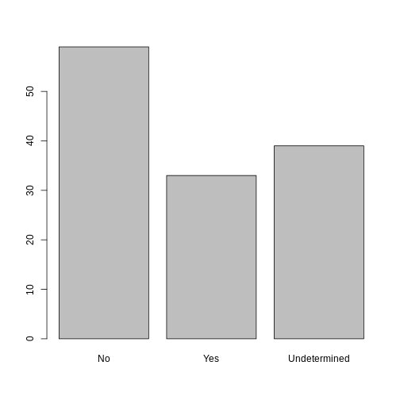

Starting with Data
Last updated on 2026-02-23 | Edit this page
Estimated time: 80 minutes
The main goals for this lessons are:
- To make sure that learners are comfortable with working with data frames, and can use the bracket notation to select slices/columns.
Overview
Questions
- What is a data.frame?
- How can I read a complete csv file into R?
- How can I get basic summary information about my dataset?
- How can I change the way R treats strings in my dataset?
- Why would I want strings to be treated differently?
Objectives
- Describe what a data frame is.
- Load external data from a .csv file into a data frame.
- Summarize the contents of a data frame.
- Subset values from data frames.
- Change how character strings are handled in a data frame.
What are data frames?
- Data frames are the de facto data structure for
tabular data in
R, and what we use for data processing, statistics, and plotting. - A data frame is the representation of data in the format of a table where the columns are vectors that all have the same length.
- Data frames are analogous to the more familiar spreadsheet in programs such as Excel, with one key difference.
- Because columns are vectors, each column must contain a single type of data (e.g., characters, integers, factors).

Data frames can be created by hand, but most
commonly they are generated by the functions read_csv() or
read_table(); in other words, when importing spreadsheets
from your hard drive (or the web). We will now demonstrate how
to import tabular data using read_csv().
Presentation of the SAFI Data
SAFI (Studying African Farmer-Led Irrigation) is a study looking at farming and irrigation methods in Tanzania and Mozambique.
The survey data was collected through interviews conducted between November 2016 and June 2017.
For this lesson, we will be using a subset of the available data.
For information about the full teaching dataset used in other lessons in this workshop, see the dataset description.
We will be using a subset of the cleaned version of the dataset that was produced through cleaning in OpenRefine (
data/SAFI_clean.csv).In this dataset, the missing data is encoded as “NULL”, each row holds information for a single interview respondent, and the columns represent:
| column_name | description |
|---|---|
| key_id | Added to provide a unique Id for each observation. (The InstanceID field does this as well but it is not as convenient to use) |
| village | Village name |
| interview_date | Date of interview |
| no_membrs | How many members in the household? |
| years_liv | How many years have you been living in this village or neighboring village? |
| respondent_wall_type | What type of walls does their house have (from list) |
| rooms | How many rooms in the main house are used for sleeping? |
| memb_assoc | Are you a member of an irrigation association? |
| affect_conflicts | Have you been affected by conflicts with other irrigators in the area? |
| liv_count | Number of livestock owned. |
| items_owned | Which of the following items are owned by the household? (list) |
| no_meals | How many meals do people in your household normally eat in a day? |
| months_lack_food | Indicate which months, In the last 12 months have you faced a situation when you did not have enough food to feed the household? |
| instanceID | Unique identifier for the form data submission |
Importing data
- You are going to load the data in R’s memory using the function
read_csv()from thereadrpackage, which is part of thetidyverse. -
readrgets installed as part as thetidyverseinstallation. - When you load the
tidyverse(library(tidyverse)), the core packages (the packages used in most data analyses) get loaded, includingreadr.
Before proceeding, however, this is a good opportunity to talk about conflicts.
- Certain packages we load can end up introducing function names that are already in use by pre-loaded R packages.
- For instance, when we load the tidyverse package below, we will
introduce two conflicting functions:
filter()andlag(). This happens becausefilterandlagare already functions used by the stats package (already pre-loaded in R). - What will happen now is that if we, for example, call the
filter()function, R will use thedplyr::filter()version and not thestats::filter()one. This happens because, if conflicted, by default R uses the function from the most recently loaded package. - Conflicted functions may cause you some trouble in the future, so it is important that we are aware of them so that we can properly handle them, if we want.
To do so, we just need the following functions from the conflicted package:
-
conflicted::conflict_scout(): Shows us any conflicted functions. -
conflict_prefer("function", "package_prefered"): Allows us to choose the default function we want from now on. - It is also important to know that we can, at any time, just
call the function directly from the package we want,
such as
stats::filter().
Path management
Even with the use of an RStudio project, it can be difficult
to learn how to specify paths to file locations. The
here package creates paths relative to the top-level
directory (your RStudio project). These relative paths work
regardless of where the associated source file lives inside
your project, like analysis projects with data and reports in
different subdirectories. This is an important contrast to using
setwd(), which depends on the way you order your files on
your computer.

- Before we can use the
read_csv()andhere()functions, we need to load the tidyverse and here packages. - Also, if you recall, the missing data is encoded as “NULL” in the
dataset. We’ll tell it to the function, so R will automatically
convert all the “NULL” entries in the dataset into
NA.
R
library(tidyverse)
library(here)
interviews <- read_csv(
here("data", "SAFI_clean.csv"),
na = "NULL")
The following code snippets show how the path to the data file would
be specified using setwd() and read.csv(), and
how it is specified using here() and
read_csv():
R
setwd("../data")
read.csv("SAFI_clean.csv")
- This works only if your working directory is
scripts/orsource/. - If you open the project with project.Rproj, your working
directory is
project/, sosetwd("../data")will fail (there is no../datafromproject/).
R
library(here)
read.csv(here("data", "SAFI_clean.csv"))
- This always works, no matter where the script is located or how you open the project.
-
here()finds the project root (where project.Rproj is) and builds the path from there. - Your code is portable and reproducible.
In the above code, we notice the here() function takes
folder and file names as inputs (e.g., "data",
"SAFI_clean.csv"), each enclosed in quotations
("") and separated by a comma. The
here() will accept as many names as are necessary to
navigate to a particular file (e.g.,
here("analysis", "data", "surveys", "clean", "SAFI_clean.csv)).
The here() function can accept the folder and
file names in an alternate format, using a slash (“/”) rather
than commas to separate the names. The two methods are equivalent, so
that here("data", "SAFI_clean.csv") and
here("data/SAFI_clean.csv") produce the same result. (The
slash is used on all operating systems; backslashes are not
used.)
If you were to type in the code above, it is likely that the
read.csv() function would appear in the automatically
populated list of functions. This function is different from the
read_csv() function, as it is included in the
“base” packages that come pre-installed with R. Overall,
read.csv() behaves similar to read_csv(), with
a few notable differences. First, read.csv() coerces column
names with spaces and/or special characters to different names
(e.g. interview date becomes interview.date).
Second, read.csv() stores data as a
data.frame, where read_csv() stores data as a
different kind of data frame called a tibble. We prefer
tibbles because they have nice printing properties among other desirable
qualities. Read more about tibbles here.
- The second statement in the code above creates a data frame
but doesn’t output any data because, as you might recall,
assignments (
<-) don’t display anything. (Note, however, thatread_csvmay show informational text about the data frame that is created.) - If we want to check that our data has been loaded, we can
see the contents of the data frame by typing its name:
interviewsin the console.
R
interviews
## Try also
## view(interviews)
## head(interviews)
OUTPUT
# A tibble: 131 × 14
key_ID village interview_date no_membrs years_liv respondent_wall_type
<dbl> <chr> <dttm> <dbl> <dbl> <chr>
1 1 God 2016-11-17 00:00:00 3 4 muddaub
2 2 God 2016-11-17 00:00:00 7 9 muddaub
3 3 God 2016-11-17 00:00:00 10 15 burntbricks
4 4 God 2016-11-17 00:00:00 7 6 burntbricks
5 5 God 2016-11-17 00:00:00 7 40 burntbricks
6 6 God 2016-11-17 00:00:00 3 3 muddaub
7 7 God 2016-11-17 00:00:00 6 38 muddaub
8 8 Chirodzo 2016-11-16 00:00:00 12 70 burntbricks
9 9 Chirodzo 2016-11-16 00:00:00 8 6 burntbricks
10 10 Chirodzo 2016-12-16 00:00:00 12 23 burntbricks
# ℹ 121 more rows
# ℹ 8 more variables: rooms <dbl>, memb_assoc <chr>, affect_conflicts <chr>,
# liv_count <dbl>, items_owned <chr>, no_meals <dbl>, months_lack_food <chr>,
# instanceID <chr>Note
-
read_csv()assumes that fields are delimited by commas. - However, in several countries, the comma is used as a decimal separator and the semicolon (;) is used as a field delimiter.
- If you want to read in this type of files in R, you can use the
read_csv2function. It behaves exactly likeread_csvbut uses different parameters for the decimal and the field separators. If you are working with another format, they can be both specified by the user. + Check out the help forread_csv()by typing?read_csvto learn more. - There is also the
read_tsv()for tab-separated data files, andread_delim()allows you to specify more details about the structure of your file.
Demonstrate how to import data using click as and show the code that is generated in the console.
Note that read_csv() actually loads the data as
a tibble. A tibble is an extension of R data
frames used by the tidyverse. When the
data is read using read_csv(), it is stored in an object of
class tbl_df, tbl, and
data.frame. You can see the class of an object with
R
class(interviews)
OUTPUT
[1] "spec_tbl_df" "tbl_df" "tbl" "data.frame" As a tibble, the type of data included in each
column is listed in an abbreviated fashion below the column
names. For instance, here key_ID is a column of
floating point numbers (abbreviated <dbl> for the
word ‘double’), village is a column of characters
(<chr>) and the interview_date is a
column in the “date and time” format (<dttm>).
Inspecting data frames
- When calling a
tbl_dfobject (likeinterviewshere), there is already a lot of information about our data frame being displayed such as the number of rows, the number of columns, the names of the columns, and as we just saw the class of data stored in each column. - However, there are functions to extract this information from data frames. Here is a non-exhaustive list of some of these functions. Let’s try them out!
Size:
-
dim(interviews)- returns a vector with the number of rows as the first element, and the number of columns as the second element (the dimensions of the object) -
nrow(interviews)- returns the number of rows -
ncol(interviews)- returns the number of columns
Content:
-
head(interviews)- shows the first 6 rows -
tail(interviews)- shows the last 6 rows
Names:
-
names(interviews)- returns the column names (synonym ofcolnames()fordata.frameobjects)
Summary:
-
str(interviews)- structure of the object and information about the class, length and content of each column -
summary(interviews)- summary statistics for each column -
glimpse(interviews)- returns the number of columns and rows of the tibble, the names and class of each column, and previews as many values will fit on the screen. Unlike the other inspecting functions listed above,glimpse()is not a “base R” function so you need to have thedplyrortibblepackages loaded to be able to execute it.
Note: most of these functions are “generic.” They can be used on other types of objects besides data frames or tibbles.
Subsetting data frames
Our interviews data frame has rows and columns (it has 2
dimensions). In practice, we may not need the entire data
frame; for instance, we may only be interested in a
subset of the observations (the rows) or a particular set of
variables (the columns). If we want to access some specific
data from it, we need to specify the “coordinates”
(i.e., indices) we want from it. Row numbers
come first, followed by column numbers.
R
## first element in the first column of the tibble
interviews[1, 1]
OUTPUT
# A tibble: 1 × 1
key_ID
<dbl>
1 1R
## first element in the 6th column of the tibble
interviews[1, 6]
OUTPUT
# A tibble: 1 × 1
respondent_wall_type
<chr>
1 muddaub R
## first column of the tibble (as a vector)
interviews[[1]]
OUTPUT
[1] 1 2 3 4 5 6 7 8 9 10 11 12 13 14 15 16 17 18
[19] 19 20 21 22 23 24 25 26 27 28 29 30 31 32 33 34 35 36
[37] 37 38 39 40 41 42 43 44 45 46 47 48 49 50 51 52 53 54
[55] 55 56 57 58 59 60 61 62 63 64 65 66 67 68 69 70 71 127
[73] 133 152 153 155 178 177 180 181 182 186 187 195 196 197 198 201 202 72
[91] 73 76 83 85 89 101 103 102 78 80 104 105 106 109 110 113 118 125
[109] 119 115 108 116 117 144 143 150 159 160 165 166 167 174 175 189 191 192
[127] 126 193 194 199 200R
## first column of the tibble
interviews[1]
OUTPUT
# A tibble: 131 × 1
key_ID
<dbl>
1 1
2 2
3 3
4 4
5 5
6 6
7 7
8 8
9 9
10 10
# ℹ 121 more rowsR
## first three elements in the 7th column of the tibble
interviews[1:3, 7]
OUTPUT
# A tibble: 3 × 1
rooms
<dbl>
1 1
2 1
3 1R
## the 3rd row of the tibble
interviews[3, ]
OUTPUT
# A tibble: 1 × 14
key_ID village interview_date no_membrs years_liv respondent_wall_type
<dbl> <chr> <dttm> <dbl> <dbl> <chr>
1 3 God 2016-11-17 00:00:00 10 15 burntbricks
# ℹ 8 more variables: rooms <dbl>, memb_assoc <chr>, affect_conflicts <chr>,
# liv_count <dbl>, items_owned <chr>, no_meals <dbl>, months_lack_food <chr>,
# instanceID <chr>R
## equivalent to head_interviews <- head(interviews)
head_interviews <- interviews[1:6, ]
: is a special function that creates numeric
vectors of integers in increasing or decreasing order, test
1:10 and 10:1 for instance.
You can also exclude certain indices of a data frame
using the “-” sign:
R
interviews[, -1] # The whole tibble, except the first column
OUTPUT
# A tibble: 131 × 13
village interview_date no_membrs years_liv respondent_wall_type rooms
<chr> <dttm> <dbl> <dbl> <chr> <dbl>
1 God 2016-11-17 00:00:00 3 4 muddaub 1
2 God 2016-11-17 00:00:00 7 9 muddaub 1
3 God 2016-11-17 00:00:00 10 15 burntbricks 1
4 God 2016-11-17 00:00:00 7 6 burntbricks 1
5 God 2016-11-17 00:00:00 7 40 burntbricks 1
6 God 2016-11-17 00:00:00 3 3 muddaub 1
7 God 2016-11-17 00:00:00 6 38 muddaub 1
8 Chirodzo 2016-11-16 00:00:00 12 70 burntbricks 3
9 Chirodzo 2016-11-16 00:00:00 8 6 burntbricks 1
10 Chirodzo 2016-12-16 00:00:00 12 23 burntbricks 5
# ℹ 121 more rows
# ℹ 7 more variables: memb_assoc <chr>, affect_conflicts <chr>,
# liv_count <dbl>, items_owned <chr>, no_meals <dbl>, months_lack_food <chr>,
# instanceID <chr>R
interviews[-c(7:131), ] # Equivalent to head(interviews)
OUTPUT
# A tibble: 6 × 14
key_ID village interview_date no_membrs years_liv respondent_wall_type
<dbl> <chr> <dttm> <dbl> <dbl> <chr>
1 1 God 2016-11-17 00:00:00 3 4 muddaub
2 2 God 2016-11-17 00:00:00 7 9 muddaub
3 3 God 2016-11-17 00:00:00 10 15 burntbricks
4 4 God 2016-11-17 00:00:00 7 6 burntbricks
5 5 God 2016-11-17 00:00:00 7 40 burntbricks
6 6 God 2016-11-17 00:00:00 3 3 muddaub
# ℹ 8 more variables: rooms <dbl>, memb_assoc <chr>, affect_conflicts <chr>,
# liv_count <dbl>, items_owned <chr>, no_meals <dbl>, months_lack_food <chr>,
# instanceID <chr>tibbles can be subset by calling indices (as shown
previously), but also by calling their column names directly:
R
interviews["village"] # Result is a tibble
interviews[, "village"] # Result is a tibble
interviews[["village"]] # Result is a vector
interviews$village # Result is a vector
# Several columns
interviews[, c("village", "interview_date")] # Result is a tibble
# Several columns for a subset of rows
interviews[1:10, c("village", "interview_date")] # Result is a tibble
# Conditions
interviews[, "no_membrs">7] # Result is a tibble
In RStudio, you can use the autocompletion feature to get the full and correct names of the columns.
Exercise
- Create a tibble (
interviews_100) containing only the data in row 100 of theinterviewsdataset.
Now, continue using interviews for each of the following
activities:
- Notice how
nrow()gave you the number of rows in the tibble?
- Use that number to pull out just that last row in the tibble.
- Compare that with what you see as the last row using
tail()to make sure it’s meeting expectations. - Pull out that last row using
nrow()instead of the row number. - Create a new tibble (
interviews_last) from that last row.
Using the number of rows in the interviews dataset that you found in question 2, extract the row that is in the middle of the dataset. Store the content of this middle row in an object named
interviews_middle. (hint: This dataset has an odd number of rows, so finding the middle is a bit trickier than dividing n_rows by 2. Use the median( ) function and what you’ve learned about sequences in R to extract the middle row!Combine
nrow()with the-notation above to reproduce the behavior ofhead(interviews), keeping just the first through 6th rows of the interviews dataset.Can you use the
dim()function to to pull out the last row in the tibble? Write your answer below.Can you select those rows of the data frame with a
years_livvalues above 40? How many are there?
R
## 1.
interviews_100 <- interviews[100, ]
## 2.
# Saving `n_rows` to improve readability and reduce duplication
n_rows <- nrow(interviews)
interviews_last <- interviews[n_rows, ]
## 3.
interviews_middle <- interviews[median(1:n_rows), ]
## 4.
interviews_head <- interviews[-(7:n_rows), ]
## 5.
interviews[dim(interviews)[1],]
OUTPUT
# A tibble: 1 × 14
key_ID village interview_date no_membrs years_liv respondent_wall_type
<dbl> <chr> <dttm> <dbl> <dbl> <chr>
1 200 Chirodzo 2017-06-04 00:00:00 8 20 burntbricks
# ℹ 8 more variables: rooms <dbl>, memb_assoc <chr>, affect_conflicts <chr>,
# liv_count <dbl>, items_owned <chr>, no_meals <dbl>, months_lack_food <chr>,
# instanceID <chr>R
## 6.
nrow(interviews[interviews$years_liv > 40, ])
OUTPUT
[1] 20Factors (if time allows)
R has a special data class, called factor, to deal with categorical data that you may encounter when creating plots or doing statistical analyses. Factors are very useful and actually contribute to making R particularly well suited to working with data. So we are going to spend a little time introducing them.
Factors represent categorical data. They are stored
as integers associated with labels and they can be ordered
(ordinal) or unordered (nominal). Factors create a structured
relation between the different levels (values) of a categorical
variable, such as days of the week or responses to a question in a
survey. This can make it easier to see how one element relates to the
other elements in a column. While factors look (and often
behave) like character vectors, they are actually treated as integer
vectors by R. So you need to be very careful when
treating them as strings.
Once created, factors can only contain a pre-defined set of values, known as levels. By default, R always sorts levels in alphabetical order. For instance, if you have a factor with 2 levels:
R
respondent_floor_type <- factor(c("earth", "cement", "cement", "earth"))
R will assign 1 to the level
"cement" and 2 to the level
"earth" (because c comes before
e, even though the first element in this vector is
"earth"). You can see this by using the function
levels() and you can find the number of levels using
nlevels():
R
levels(respondent_floor_type)
OUTPUT
[1] "cement" "earth" R
nlevels(respondent_floor_type)
OUTPUT
[1] 2Sometimes, the order of the factors does not matter. Other times you
might want to specify the order because it is meaningful (e.g.,
“low”, “medium”, “high”). It may improve your visualization, or
it may be required by a particular type of analysis. Here, one way to
reorder our levels in the respondent_floor_type vector
would be:
R
respondent_floor_type # current order
OUTPUT
[1] earth cement cement earth
Levels: cement earthR
respondent_floor_type <- factor(respondent_floor_type,
levels = c("earth", "cement"))
respondent_floor_type # after re-ordering
OUTPUT
[1] earth cement cement earth
Levels: earth cementIn R’s memory, these factors are represented by integers (1, 2), but
are more informative than integers because factors are self
describing: "cement", "earth" is more
descriptive than 1, and 2. Which one is
“earth”? You wouldn’t be able to tell just from the integer data.
Factors, on the other hand, have this information built in. It is
particularly helpful when there are many levels. It also makes
renaming levels easier. Let’s say we made a mistake and need to
recode “cement” to “brick”. We can do this using the
fct_recode() function from the
forcats package (included in the
tidyverse) which provides some extra tools
to work with factors.
R
levels(respondent_floor_type)
OUTPUT
[1] "earth" "cement"R
respondent_floor_type <- fct_recode(respondent_floor_type, brick = "cement")
## as an alternative, we could change the "cement" level directly using the
## levels() function, but we have to remember that "cement" is the second level
# levels(respondent_floor_type)[2] <- "brick"
levels(respondent_floor_type)
OUTPUT
[1] "earth" "brick"R
respondent_floor_type
OUTPUT
[1] earth brick brick earth
Levels: earth brickSo far, your factor is unordered, like a nominal
variable. R does not know the difference between a nominal and
an ordinal variable. You make your factor an ordered factor by using the
ordered=TRUE option inside your factor function. Note how
the reported levels changed from the unordered factor above to the
ordered version below. Ordered levels use the less than sign
< to denote level ranking.
R
respondent_floor_type_ordered <- factor(respondent_floor_type,
ordered = TRUE)
respondent_floor_type_ordered # after setting as ordered factor
OUTPUT
[1] earth brick brick earth
Levels: earth < brickConverting factors
If you need to convert a factor to a character vector, you use
as.character(x).
R
as.character(respondent_floor_type)
OUTPUT
[1] "earth" "brick" "brick" "earth"Converting factors where the levels appear as numbers (such as
concentration levels, or years) to a numeric vector is a little
trickier. The as.numeric() function returns the index
values of the factor, not its levels, so it will result in an entirely
new (and unwanted in this case) set of numbers. One method to avoid this
is to convert factors to characters, and then to numbers. Another method
is to use the levels() function. Compare:
R
year_fct <- factor(c(1990, 1983, 1977, 1998, 1990))
as.numeric(year_fct) # Wrong! And there is no warning...
OUTPUT
[1] 3 2 1 4 3R
as.numeric(as.character(year_fct)) # Works...
OUTPUT
[1] 1990 1983 1977 1998 1990R
as.numeric(levels(year_fct))[year_fct] # The recommended way.
OUTPUT
[1] 1990 1983 1977 1998 1990R
# Uses as.numeric(levels(year_fct)) to get the numeric values of the levels, and then uses the underlying integer vector to subset it.
as.numeric(levels(year_fct))
OUTPUT
[1] 1977 1983 1990 1998R
as.numeric(year_fct)
OUTPUT
[1] 3 2 1 4 3Notice that in the recommended levels() approach,
three important steps occur:
- We obtain all the factor levels using
levels(year_fct) - We convert these levels to numeric values using
as.numeric(levels(year_fct)) - We then access these numeric values using the underlying integers of
the vector
year_fctinside the square brackets
Renaming factors
When your data is stored as a factor, you can use the
plot() function to get a quick glance at the number of
observations represented by each factor level. Let’s extract the
memb_assoc column from our data frame, convert it into a
factor, and use it to look at the number of interview respondents who
were or were not members of an irrigation association:
R
## create a vector from the data frame column "memb_assoc"
memb_assoc <- interviews$memb_assoc
## convert it into a factor
memb_assoc <- as.factor(memb_assoc)
## let's see what it looks like
memb_assoc
OUTPUT
[1] <NA> yes <NA> <NA> <NA> <NA> no yes no no <NA> yes no <NA> yes
[16] <NA> <NA> <NA> <NA> <NA> no <NA> <NA> no no no <NA> no yes <NA>
[31] <NA> yes no yes yes yes <NA> yes <NA> yes <NA> no no <NA> no
[46] no yes <NA> <NA> yes <NA> no yes no <NA> yes no no <NA> no
[61] yes <NA> <NA> <NA> no yes no no no no yes <NA> no yes <NA>
[76] <NA> yes no no yes no no yes no yes no no <NA> yes yes
[91] yes yes yes no no no no yes no no yes yes no <NA> no
[106] no <NA> no no <NA> no <NA> <NA> no no no no yes no no
[121] no no no no no no no no no yes <NA>
Levels: no yesR
# the summary of the factor shows us the number of observations for each level of the factor
summary(memb_assoc)
OUTPUT
no yes NA's
59 33 39 R
## bar plot of the number of interview respondents who were
## members of irrigation association:
plot(memb_assoc)

Looking at the plot compared to the output of the vector, we can see that in addition to “no”s and “yes”s, there are some respondents for whom the information about whether they were part of an irrigation association hasn’t been recorded, and encoded as missing data. These respondents do not appear on the plot. Let’s encode them differently so they can be counted and visualized in our plot.
R
## Let's recreate the vector from the data frame column "memb_assoc"
memb_assoc <- interviews$memb_assoc
## replace the missing data with "undetermined"
memb_assoc[is.na(memb_assoc)] <- "undetermined"
## convert it into a factor
memb_assoc <- as.factor(memb_assoc)
## let's see what it looks like
memb_assoc
OUTPUT
[1] undetermined yes undetermined undetermined undetermined
[6] undetermined no yes no no
[11] undetermined yes no undetermined yes
[16] undetermined undetermined undetermined undetermined undetermined
[21] no undetermined undetermined no no
[26] no undetermined no yes undetermined
[31] undetermined yes no yes yes
[36] yes undetermined yes undetermined yes
[41] undetermined no no undetermined no
[46] no yes undetermined undetermined yes
[51] undetermined no yes no undetermined
[56] yes no no undetermined no
[61] yes undetermined undetermined undetermined no
[66] yes no no no no
[71] yes undetermined no yes undetermined
[76] undetermined yes no no yes
[81] no no yes no yes
[86] no no undetermined yes yes
[91] yes yes yes no no
[96] no no yes no no
[101] yes yes no undetermined no
[106] no undetermined no no undetermined
[111] no undetermined undetermined no no
[116] no no yes no no
[121] no no no no no
[126] no no no no yes
[131] undetermined
Levels: no undetermined yesR
summary(memb_assoc)
OUTPUT
no undetermined yes
59 39 33 R
## bar plot of the number of interview respondents who were
## members of irrigation association:
plot(memb_assoc)

Exercise
Rename the levels of the factor to have the first letter in uppercase: “No”,“Undetermined”, and “Yes”.
Now that we have renamed the factor level to “Undetermined”, can you recreate the barplot such that “Undetermined” is last (after “Yes”)?
R
## Rename levels.
memb_assoc <- fct_recode(memb_assoc, No = "no",
Undetermined = "undetermined", Yes = "yes")
## Reorder levels. Note we need to use the new level names.
memb_assoc <- factor(memb_assoc, levels = c("No", "Yes", "Undetermined"))
plot(memb_assoc)

- Use read_csv to read tabular data in R.
- Use factors to represent categorical data in R.